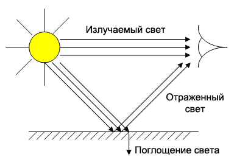
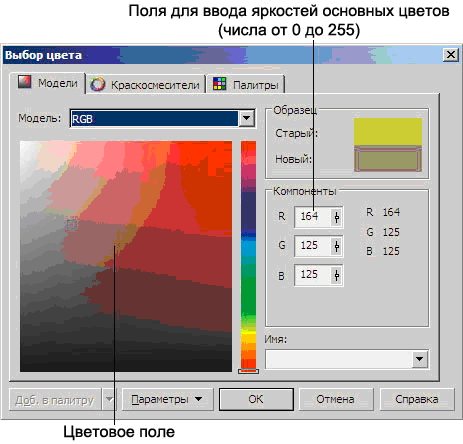
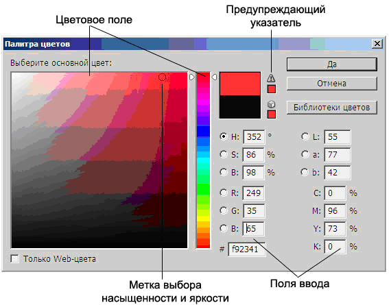
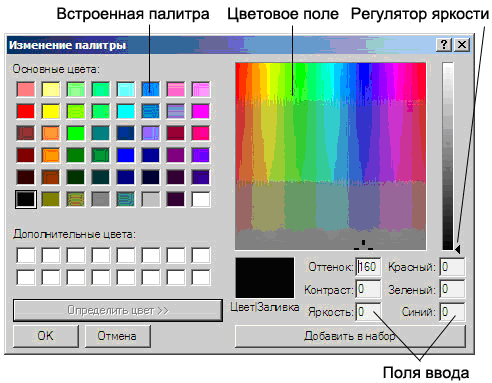
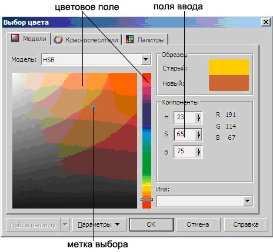

Системы цветов
Свет — электромагнитное излучение.
Цвет характеризует действие излучения на глаз человека. Таким образом, лучи света, попадая на сетчатку глаза, производят ощущение цвета.
Излучаемый свет — это свет, выходящий из источника, например, Солнца, лампочки или экрана монитора. Отражённый свет — это свет, «отскочивший » от поверхности объекта. Именно его мы видим, когда смотрим на какой-либо предмет, не являющийся источником света.
Излучаемый свет, идущий непосредственно от источника к глазу, сохраняет в себе все цвета, из которых он создан. Но этот свет может измениться при отражении от объекта (рис. 1).

Рис. 1. Излучение, отражение и поглощение света
Подобно Солнцу и другим источникам освещения, монитор излучает свет. Бумага, на которой печатается изображение, отражает свет. Так как цвет может получиться в процессе излучения и в процессе отражения, то существуют два противоположных метода его описания: системы аддитивных и субтрактивных цветов.
Система аддитивных цветов
Если с близкого расстояния (а ещё лучше с помощью лупы) посмотреть на экран работающего монитора или телевизора, то нетрудно увидеть множество мельчайших точек красного(Red), зелёного (Green) и синего (Blue) цветов. Дело в том, что на поверхности экрана расположены тысячи фосфоресцирующих цветовых точек, которые бомбардируются электронами с большой скоростью. Цветовые точки излучают свет под воздействием электронного луча. Так как размеры этих точек очень малы (около 0,3 мм в диаметре), соседние разноцветные точки сливаются, формируя все другие цвета и оттенки, например:
красный + зеленый = желтый,
красный + синий = пурпурный,
зеленый + синий = голубой,
красный + зеленый + синий = белый.
Компьютер может точно управлять количеством света, излучаемого через каждую точку экрана. Поэтому, изменяя интенсивность свечения цветных точек, можно создать большое многообразие оттенков.
Таким образом, аддитивный (add — присоединять) цвет получается при
объединении (суммировании) лучей трех основных цветов — красного,
зеленого и синего. Если интенсивность каждого из них достигает 100%, то
получается белый цвет. Отсутствие всех трех цветов дает черный цвет.
Систему аддитивных цветов, используемую в компьютерных мониторах,
принято обозначать аббревиатурой RGB.

Рис. 2. Диалоговое окно программы CorelDraw для формирования цвета в системе RGB

Рис. 3. Диалоговое окно для выбора цвета в программе Adobe Photoshop
В большинстве программ для создания и редактирования изображений пользователь имеет возможность сформировать свой собственный цвет (в дополнение к предлагаемым палитрам), используя красную, зеленую и синюю компоненты. Как правило, графические программы позволяют комбинировать требуемый цвет из 256 оттенков красного, 256 оттенков зеленого и 256 оттенков синего. Как нетрудно подсчитать, 256 х 256 х 256 = 16,7 миллионов цветов. Вид диалогового окна для задания произвольного цветового оттенка в разных программах может быть различным (рис. 2,3,4).
Таким образом, пользователь может выбрать готовый цвет из встроенной палитры или создать свой собственный оттенок, указав в полях ввода значения яркостей R, G и В для красной, зеленой и синей цветовых составляющих в диапазоне от 0 до 255 (рис. 2,3,4).
Далее вновь созданный цвет может быть использован для рисования и закрашивания фрагментов изображения.

Рис. 4. Диалоговое окно для выбора цвета в графическом редакторе Paint (стандартная программа WINDOWS )
Система субтрактивных цветов
В процессе печати свет отражается от листа бумаги. Поэтому для печати графических изображений используется система цветов, работающая с отраженным светом — система субтрактивных цветов (subtract — вычитать).
Белый цвет состоит из всех цветов радуги. Если пропустить луч света через простую призму, он разложится в цветной спектр. Красный, оранжевый, жёлтый, зелёный, голубой, синий и фиолетовый цвета образуют видимый спектр света. Белая бумага при освещении отражает все цвета, окрашенная же бумага поглощает часть цветов, а остальные — отражает. Например, листок красной бумаги, освещённый белым светом, выглядит красным именно потому, что такая бумага поглощает все цвета, кроме красного. Та же красная бумага, освещённая синим цветом, будет выглядеть чёрной, так как синий цвет она поглощает.
В системе субтрактивных цветов основными являются голубой (Cyan), пурпурный (Magenta) и жёлтый (Yellow). Каждый из них поглощает (вычитает) определённые цвета из белого света, падающего на печатаемую страницу. Вот как три основных цвета могут быть использованы для получения чёрного, красного, зелёного и синего цветов:
голубой + пурпурный + жёлтый = чёрный,
голубой + пурпурный = синий,
жёлтый + пурпурный = красный,
жёлтый + голубой = зелёный.
Смешивая основные цвета в разных пропорциях на белой бумаге, можно создать большое многообразие оттенков.
Белый цвет получается при отсутствии всех трёх основных цветов. Высокое процентное содержание голубого , пурпурного и жёлтого образует чёрный цвет. Точнее, чёрный цвет должен получиться теоретически, в действительности же из-за некоторых особенностей типографских красок смесь всех трёх основных цветов даёт грязно-коричневый тон, поэтому при печати изображения добавляется ещё чёрная краска (Black).
Систему субтрактивных цветов обозначают аббревиатурой CMYK (чтобы не возникла путаница с Blue, для обозначения Black используется символ К).


Рис. 5. Взаимосвязь моделей RGB и CMYК
Система «Тон — Насыщенность — Яркость»
Системы цветов RGB и CMYK базируются на ограничениях, накладываемых аппаратным обеспечением (мониторами компьютеров и типографскими красками). Более интуитивным способом описания цвета является его представление в виде тона (Hue), насыщенности (Saturation) и яркости (Brightness). Для такой системы цветов используется аббревиатура HSB.
Тон — конкретный оттенок цвета: красный, желтый, зеленый, пурпурный и т.п.
Насыщенность характеризует «чистоту» цвета: уменьшая насыщенность, мы «разбавляем» его белым цветом.
Яркость же зависит от количества черной краски, добавленной к данному цвету: чем меньше черноты, тем больше яркость цвета.
 Рис. 7. Диалоговое окно программы CorelDraw для формирования цвета в системе HSB
Черно-белый и полутоновый режим
Черно-белый режим. Это обычный черно–белый режим, который полностью лишен цвета, в нем есть только белый, черный и градации серого.
Этот режим можно использовать для работы с черно-белыми изображениями, полученными сканированием черно-белых чертежей и гравюр, а также иногда при выводе цветных изображений на черно-белую печать.
Полутоновый режим. Полутоновым режим предназначен для нецветных изображений. Так, 8-разрядное полутоновое изображение может содержать 256 возможных градаций серого, а 16-разрядное — теоретически 65536 градаций серого. Черно-белая фотография на первый взгляд содержит только черный и белый цвет, но при более тщательном изучении обнаруживаются едва заметные тона, усиливающие окраску и области теней и средних тонов. Поэтому черно-белые изображения рекомендуется фиксировать и хранить в режиме RGB для максимального расширения градационной шкалы.